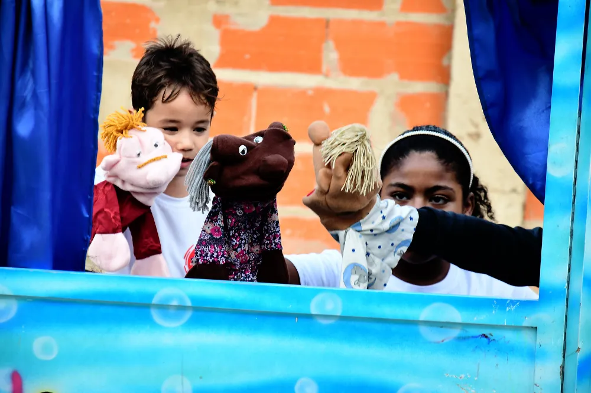

Nuestra historia
Una historia escrita a muchas manos.
Iniciativas que reconocen el arte y la cultura como herramientas para la transformación social, construidas junto a niñas, niños, adolescentes, jóvenes, familias y comunidades.
- Desde 2021
- Barranquilla y su área metropolitana
Detrás de cada cifra hay un nombre, una familia y un barrio que decidió creer en el arte. Esta es la historia de esos encuentros.
El arte y la cultura para la transformación social
En la Agencia Cultural 7-80 impulsamos procesos e iniciativas que reconocen el arte y la cultura como herramientas para la transformación social. Trabajamos junto a niñas, niños, adolescentes, jóvenes, familias y comunidades para promover la protección de derechos, prevenir las violencias, fortalecer la participación y favorecer la integración sociocultural.
A través de nuestros proyectos desarrollamos experiencias adaptadas a las características y necesidades de cada territorio:
- Formación artística
- Creación colectiva
- Comunicación comunitaria
- Encuentro ciudadano
Casa Tricolor: Escuelita Comunitaria de Arte y Cultura
Infancias, formación artística e integración comunitaria

Casa Tricolor es una de las principales apuestas comunitarias de la Agencia Cultural 7-80. Desde 2021 promueve el acceso a las artes y la cultura como oportunidades para el desarrollo integral de niñas y niños, el fortalecimiento de sus capacidades creativas y la integración de las familias y comunidades.
Su metodología combina experiencias de formación artística, juego, exploración, creación colectiva y participación comunitaria. A través de diferentes lenguajes, niñas y niños encuentran espacios seguros para expresarse, aprender, compartir y construir vínculos.
- Teatro
- Música
- Danza
- Artes plásticas
- Circo
- Fotografía
Casa Tricolor es, ante todo, un espacio para crear, aprender, compartir y crecer en comunidad. Una apuesta por infancias que encuentran en el arte nuevas formas de expresarse y construir su futuro.Conoce Casa Tricolor
Desde sus primeras experiencias, Casa Tricolor ha llegado a distintos territorios de Barranquilla y su área metropolitana:
-
2022
Asentamiento humano Villa Caracas
- ACNUR
- OIM
- ONU-Hábitat
Con el apoyo de ACNUR, OIM y ONU-Hábitat, en el marco del programa Ciudades Incluyentes, Comunidades Solidarias, se desarrolló una experiencia comunitaria en Villa Caracas.
- 25
- niñas y niños
- 15
- madres
- 120
- personas de la comunidad
- Embajada de Austria
Ese mismo año, con el apoyo de la Embajada de Austria, se implementó un proceso de formación artística durante cuatro meses en los barrios Los Olivos, El Bosque y Villa Caracas.
- 80
- niñas y niños
- 25
- personas adultas
-
2023
Expansión a nuevos territorios
- Ministerio de las Culturas, las Artes y los Saberes
- Programa Nacional de Concertación Cultural
Con el respaldo del Ministerio de las Culturas, las Artes y los Saberes, a través del Programa Nacional de Concertación Cultural, Casa Tricolor llegó a nuevos territorios.
- El Porvenir · Soledad
- Caracolí · Malambo
- Villa Caracas · Barranquilla
- Villanueva · Barranquilla
- La Cangrejera · Barranquilla
- 70
- niñas y niños
- 20
- personas adultas
- ~160
- personas de la comunidad
-
2024–2025
Experiencias comunitarias Atrapasueños
- ICBF
- Estrategia Atrapasueños
En articulación con el Instituto Colombiano de Bienestar Familiar (ICBF), a través de la Estrategia Atrapasueños – Experiencias Comunitarias, se desarrolló un proceso entre diciembre de 2024 y febrero de 2025.
- 120
- niñas, niños y adolescentes
- 100
- personas adultas
-
2025–2026
Nuevas experiencias y continuidad territorial
- Programa Nacional de Concertación Cultural
- Alianzas territoriales
La iniciativa continuó desarrollándose mediante nuevas alianzas y procesos de formación artística y comunitaria, incluyendo experiencias en Barranquilla y su área metropolitana.
En 2026, con el respaldo del Programa Nacional de Concertación Cultural y otras alianzas territoriales, Casa Tricolor amplía su presencia en Soledad, fortaleciendo el acceso de niñas y niños a experiencias artísticas y espacios de participación familiar y comunitaria.

Cada dibujo, cada canción y cada función de títeres es una forma de decir: aquí estoy, esta es mi voz.
Refugios Culturales
Juventudes · Arte urbano · Comunicación · Participación
Refugios Culturales es una iniciativa que promueve la participación, la expresión artística y el protagonismo de adolescentes y jóvenes en contextos comunitarios. A través del arte urbano, la cultura, la comunicación y la apropiación del espacio público, propicia entornos de encuentro, creación y convivencia.
La iniciativa articula diferentes experiencias de trabajo comunitario:
-
01
#ParchesCulturales
Laboratorios de música, dibujo, pintura y creación audiovisual, en los que las y los participantes exploran sus talentos y desarrollan producciones artísticas colectivas.
-
02
#BuenaEsa
Espacios de sensibilización y diálogo sobre prevención de las violencias de género, la trata de personas, la xenofobia y la promoción de una cultura de paz.
-
03
Territorios que Comunican
Experiencias de formación en fotografía, producción audiovisual y comunicación comunitaria, para que las juventudes narren sus realidades desde sus propias voces.
-
04
#ConvitesArtísticos
Encuentros comunitarios que integran cineforos, teatro, circo, música, exposiciones y actividades recreativas.
-
2024
Primera implementación
- Ministerio de las Culturas, las Artes y los Saberes
- Programa Nacional de Concertación Cultural
Su primera implementación se desarrolló durante cinco meses, con el apoyo del Ministerio de las Culturas, las Artes y los Saberes, a través del Programa Nacional de Concertación Cultural.
- La Pradera · Barranquilla
- Me Quejo · Barranquilla
- Las Malvinas · Barranquilla
- Cruz de Mayo · Soledad
- La Concepción · Soledad
- 5
- meses de proceso
- 120
- adolescentes
- 60
- jóvenes y personas adultas
-
2026
Nuevos territorios
- Ministerio de las Culturas, las Artes y los Saberes
- Programa Nacional de Concertación Cultural
En 2026, nuevamente con el apoyo del Ministerio de las Culturas, las Artes y los Saberes, bajo la financiación de su Programa Nacional de Concertación Cultural, se llegó al barrio El Porvenir de Soledad y a la comunidad del 7 de Abril en Barranquilla.
- El Porvenir · Soledad
- 7 de Abril · Barranquilla
Gracias por ser parte del camino
Esta historia no sería posible sin las niñas, niños, adolescentes y jóvenes que se atreven a crear; sin sus familias, que abren las puertas de sus barrios; sin las formadoras y formadores que acompañan cada proceso; y sin cada organización aliada que ha caminado a nuestro lado.
Seguimos escribiéndola juntos.